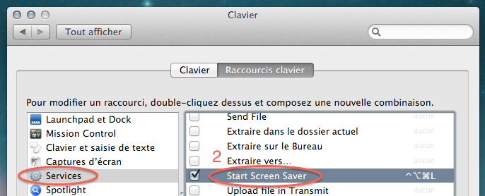

В Сафари можно было с помощью шорткатов Command + 1-9 вызывать закладки из букмаркбара (такой хренотени с закладками, которая всегда видна). В Гугл Хроме же с помощью этих же шорткатов осуществляется переключение между табами. Но, в отличие от закладок, которые ты расположил определенным образом и запомнил, где и что лежит (1-mail, 2-google reader, 3-lenta.ru), табы у тебя все время разные и имеют разную ширину, в итоге, в хроме я пользуюсь (и то редко) только command + 1, 2 ибо в остальных случаях надо считать, и проще просто кликнуть в нужный таб. Для избранных букмарков можно, конечно, настроить keyword search, но делается это через попу и я уверен, что многие даже не догадываются о том, что keyword search можно использовать не только для поиска. Вывод: такие шорткаты нужно использовать только в случае, когда связанная с ними информация меняется редко и не требует никакого “визуального” контроля.
Чуваки из “Smashing magazine” пишут о том, почему и когда можно ломать устоявшиеся шаблоны.

Оказывается, не все знают, как можно залочить мак с клавиатуры.
- Идем в настройки безопасности и ставим галочку напротив опции "Спрашивать пароль после активации скринсейвера":

- Потом идем в настройки клавиатуры, находим там группу шорткатов "Services" и вешаем шорткат на запуск скринсейвера: 
Ну и напомню про самую клевую штуку — повесить Spotlight на Caps Lock!
Как же меня достал command+tab "не туда". Типа, ходишь ты ходишь, между редактором и браузером и все ок, до того момента, пока не захочешь почту посмотреть. После этого, блин, пять раз не туда по цмд-табу попадаешь (черт! блядь! фак!), пока явно туда-сюда между редактором-браузером не переключишься. Вот и Аза Раскин пишет, что переключение по MRU (most recently used) неправильное. Но он предлагает какое-то "адаптивное" поведение, а думаю, что самый простой способ — это дать мне возможность "замораживать" (лочить) "цикл". При этом сделать так, чтобы этот лок в некоторых случаях не работал (например, если виден попап с иконками приложений, появляющийся если подержать command и нажать и отпустить alt). Например, есть у меня три приложения: редактор, браузер и почтовый клиент. И я все время хожу между редактором и браузером, но иногда хочу попасть в почтового клиента. Соответственно, изначально все работает как обычно, то есть на cmd+tab активируется предыдущее активированное приложение, но вот я попал в редактор, дальше знаю, что следующим cmd+tab я попаду в браузер и я просто беру и нажимаю там что-то, скажем просто долго держу cmd+tab, мне вокруг этих двух приложений (текущего и следующего) рисуется специальная рамка, показывающая, что они залочены. Дальше, я сколько бы не нажимал cmd+tab всегда буду переключаться между ними. А когда захочу попасть в почтового клиента, то нажму cmd+tab и подожду появления попапа с иконками приложений, при появлении которого, вот этот лок работать перестает, то есть нажав там два раза cmd+tab я выйду за пределы текущего залоченного "цикла". Захочу опять в редактор или браузер — нажму быстро alt+tab и, независимо ни от чего, сразу опять попаду в "цикл". Заделать что-ли пруф-оф-концепт? ps: Если надо переключаться между тремя прогами, то залочить и нажать цифру "3".
Хочу еще раз убедиться, что вишлисты — это полная херня.

{kind=link}